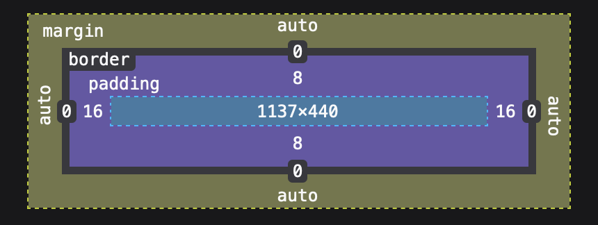

Every element is encased in a box that includes: margins, borders, padding, and the actual content.
Control the space around and within elements.
div {
margin: 20px;
border: 5px solid black;
padding: 10px;
}Round corners or create circles.
.circle {
border-radius: 50%;
}Include padding and border in the element's total width and height.
* {
box-sizing: border-box;
}Understanding how margin, padding, and border affect layout is crucial for precise design.